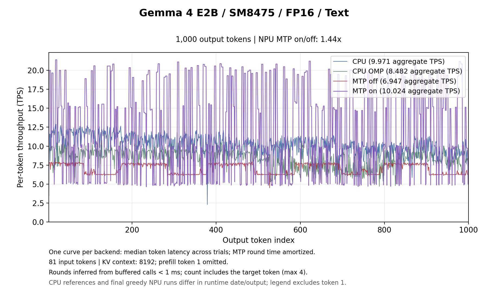
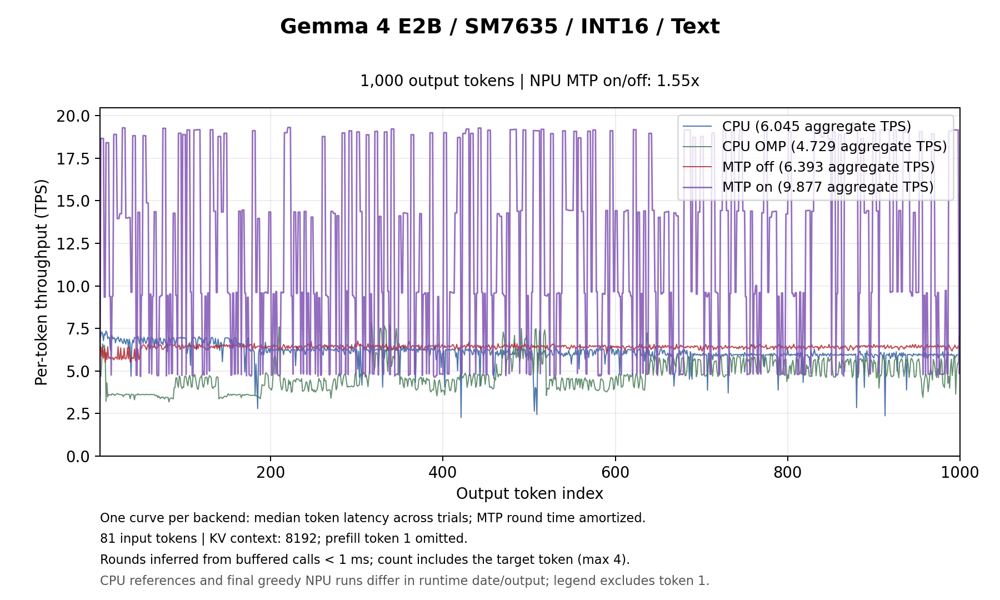
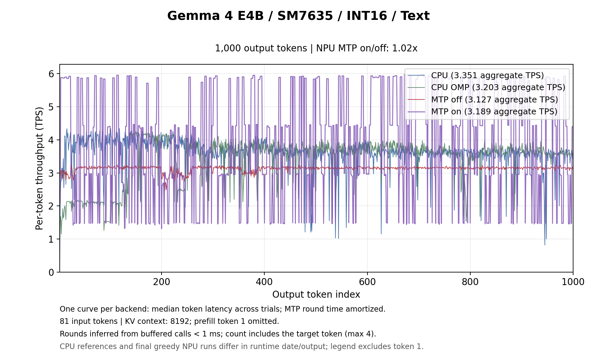
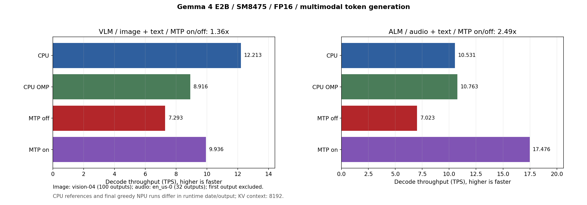
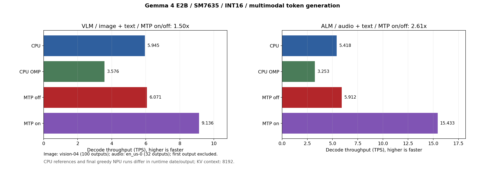
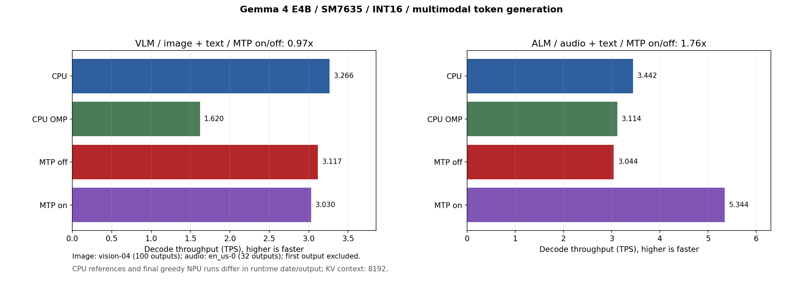
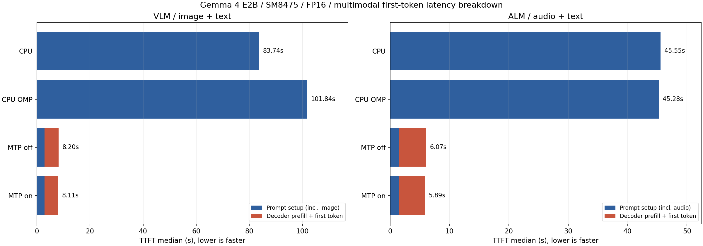
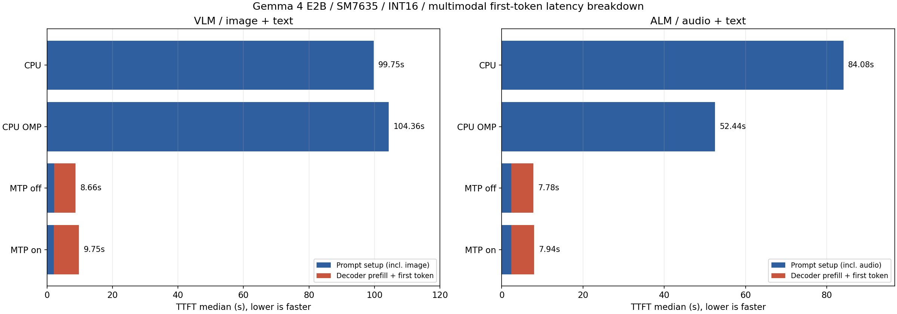
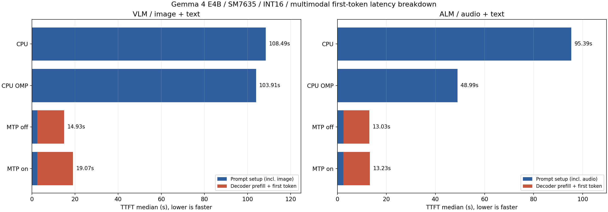

How much MTP (Multi-Token Prediction) in ailia LLM 1.5.1 improves Gemma 4 decode throughput (TPS) on the NPU of Qualcomm SoCs.
For how MTP works and how to use it, see the ailia LLM MTP Guide. For QNN measurements without MTP, see the ailia LLM NPU (QNN) Benchmark.
Throughput for an 81-token input and 1,000 generated tokens. CPU values are from running the same Q4_0 GGUF via the standard llama.cpp path (without MTP) on the same device. The acceptance rate is the fraction of candidates proposed by the assistant that were accepted by the main model's verification.
| Device | Model | CPU | NPU (without MTP) | NPU (with MTP) | MTP speedup | Acceptance |
|---|---|---|---|---|---|---|
| SM8475 (Hexagon v69) | E2B / FP16 | 9.971 tokens/s | 6.947 tokens/s | 10.024 tokens/s | 1.44x faster | 33.7% |
| SM7635 (Hexagon v73) | E2B / Int16 | 6.045 tokens/s | 6.393 tokens/s | 9.877 tokens/s | 1.55x faster | 35.6% |
| SM7635 (Hexagon v73) | E4B / Int16 | 3.351 tokens/s | 3.127 tokens/s | 3.189 tokens/s | 1.02x | 39.1% |
For E2B, both SM8475 and SM7635 improved by 1.4x to 1.6x. The acceptance rate is around 35%, but because the 3 assistant candidates and the 4-row verification by the main model are processed in a single AR-4 run, more tokens are committed per main-model run. E4B on SM7635 reached only 1.02x for text generation (1.76x for audio input).



In the MTP curves, the time of each main-model run (round) is divided evenly among the tokens committed in that round. Rounds where many candidates are accepted show high TPS and rounds where all candidates are rejected show low TPS, so the values swing up and down. The TPS in the legend is computed from the total time.
Time to the first token (TTFT) when prefilling an 81-token input from position 0, compared across three configurations. "First run" is the first generation right after opening the model and includes restoring the main model's QNN context. "Resident" is measured after a warm-up generation has initialized the context and the assistant and the KV cache has been cleared, and corresponds to the prefill time itself. Measured with a diagnostic build with per-stage timers, using an 81-token input and 8 output tokens; values are the median of two runs.
| Device / model | Condition | Conventional model (v1.5.0) | MTP-capable main model only | MTP-capable main model + assistant |
|---|---|---|---|---|
| SM8475 E2B / FP16 | First run | 3.03 s | 2.52 s | 2.52 s |
| Resident | 0.84 s | 0.77 s | 0.77 s | |
| SM7635 E2B / Int16 | First run | 3.69 s | 3.37 s | 3.69 s |
| Resident | 1.92 s | 1.94 s | 1.93 s |
For prefill throughput with 64 to 2,048 input tokens, the same AR-256 graph is used, so refer to the NPU values in the QNN Benchmark (for example, 299.827 tokens/s for a 2,048-token input with E2B on SM8475). The Windows measurements confirm that prefill throughput is equivalent with and without MTP at every input length from 64 to 2,048 tokens (see below).
Image input uses one 768x768 image with 100 output tokens, and audio input transcribes one English recording with 32 output tokens. The image and audio encoders run on the NPU.
| Device / model | Input | CPU | NPU (without MTP) | NPU (with MTP) | MTP speedup | Acceptance |
|---|---|---|---|---|---|---|
| SM8475 E2B / FP16 | Image | 12.213 tokens/s | 7.293 tokens/s | 9.936 tokens/s | 1.36x faster | 36.1% |
| Audio | 10.531 tokens/s | 7.023 tokens/s | 17.476 tokens/s | 2.49x faster | 100.0% | |
| SM7635 E2B / Int16 | Image | 5.945 tokens/s | 6.071 tokens/s | 9.136 tokens/s | 1.50x faster | 33.3% |
| Audio | 5.418 tokens/s | 5.912 tokens/s | 15.433 tokens/s | 2.61x faster | 92.6% | |
| SM7635 E4B / Int16 | Image | 3.266 tokens/s | 3.117 tokens/s | 3.030 tokens/s | 0.97x | 36.9% |
| Audio | 3.442 tokens/s | 3.044 tokens/s | 5.344 tokens/s | 1.76x faster | 100.0% |
In audio transcription, the output is largely determined by the input audio, so almost all assistant candidates are accepted and the speedup is large, around 2.5x. This is a measurement on a single recording and is not a general speedup ratio.



TTFT is the sum of prompt setup and the first generate call, and does not include model opening. NPU values are the median of two greedy runs; CPU values are single runs on the same image and audio (on the CPU path, the image and audio encoders also run on the CPU).
| Device / model | Input | CPU | NPU (without MTP) | NPU (with MTP) |
|---|---|---|---|---|
| SM8475 E2B / FP16 | Text | — | 3.15 s | 3.44 s |
| Image | 83.74 s | 8.20 s | 8.11 s | |
| Audio | 45.55 s | 6.07 s | 5.89 s | |
| SM7635 E2B / Int16 | Text | — | 3.92 s | 3.68 s |
| Image | 99.75 s | 8.66 s | 9.75 s | |
| Audio | 84.08 s | 7.78 s | 7.94 s | |
| SM7635 E4B / Int16 | Text | — | 8.47 s | 7.60 s |
| Image | 108.49 s | 14.93 s | 19.07 s | |
| Audio | 95.39 s | 13.03 s | 13.23 s |
Prefill is processed with AR-256 regardless of MTP, so TTFT is roughly the same. For image input, the assistant is released before running the encoder and recreated after prefill, which adds some work. Each trial measures the first generation on a new instance and does not include KV reuse in multi-turn conversations.
For image and audio input, TTFT on the NPU (with MTP) is 1/5.7 to 1/10.6 of the CPU.



Results for E2B with temperature 0.8, top-k 40, top-p 0.95 and seed 1234. With MTP, speculative sampling accepts candidates based on the probability ratio between the main model and the assistant.
| Device / model | Input | Without MTP | With MTP | MTP speedup | Acceptance |
|---|---|---|---|---|---|
| SM8475 E2B / FP16 | Text | 6.931 tokens/s | 9.885 tokens/s | 1.43x faster | 34.8% |
| Image | 7.158 tokens/s | 10.113 tokens/s | 1.41x faster | 37.6% | |
| Audio | 7.146 tokens/s | 17.302 tokens/s | 2.42x faster | 100.0% | |
| SM7635 E2B / Int16 | Text | 6.369 tokens/s | 9.617 tokens/s | 1.51x faster | 34.7% |
| Image | 6.426 tokens/s | 10.206 tokens/s | 1.59x faster | 40.7% | |
| Audio | 5.848 tokens/s | 15.372 tokens/s | 2.63x faster | 92.6% |
With temperature, the speedup is almost the same as with greedy decoding.
In the QNN Benchmark, the NPU was up to 4.2x faster than the CPU in prefill, but in decode, which processes one token at a time, weight loading dominated and the NPU was equal to or slower than the CPU. With MTP, multiple tokens can be committed per main-model run, so NPU decode outperforms the CPU.
The CPU values are earlier measurements on the same devices running the same Q4_0 GGUF via the standard llama.cpp path (OpenMP disabled, without MTP); text was measured twice and image/audio once each. The CPU audio value is recomputed from the timing of the first 32 tokens of a 33-token run. The CPU and NPU were measured at different times and produced different token sequences, and clocks and temperatures were not fixed, so treat these as reference values.
Snapdragon 8+ Gen 1 (SM8475 / Hexagon v69) uses the E2B FP16 model, and Snapdragon 7s Gen 3 (SM7635 / Hexagon v73) uses the E2B / E4B Int16 models. Both the main model and the assistant are the v1.5.1 MTP models (W4), with QAIRT 2.47, a context length of 8192 and the AR-256 (prefill) / AR-4 (verification) / AR-1 configuration.
"Without MTP" runs the same MTP-capable main model without the assistant (generating one token at a time with AR-1), and "with MTP" opens the assistant with ailiaLLMOpenMtpModel. Each condition was measured twice in the order off → on → on → off, and the median is shown. Each trial uses a new instance, with a 20-second gap between trials. TPS is computed from the time excluding the first output token.
Sampling is greedy (temperature 0, top-k 1, top-p 1, seed 1234). For results with temperature, see "Sampling with Temperature". MTP and AR-1 generate different token sequences, so this is not a comparison on identical token sequences.
The E2B / E4B FP16 models were measured on Snapdragon X Plus (SC8380XP / Hexagon v73, 8 cores) running Windows 11 Pro. The following three configurations were compared on the same device with the same build.
gemma4-<model>-sc8380xp.qnn)Each configuration was measured once, with a 60-second wait before each trial. The device was on AC power with the Balanced power plan, used 4 performance cores as workers, and had background apps running.
Throughput for an 81-token input and 1,000 generated tokens.
| Model | Non-MTP (v1.5.0) | Without MTP | With MTP | MTP speedup (vs. non-MTP) | Acceptance |
|---|---|---|---|---|---|
| E2B / FP16 | 7.581 tokens/s | 7.681 tokens/s | 11.361 tokens/s | 1.50x faster | 35.2% |
| E4B / FP16 | 4.477 tokens/s | 4.403 tokens/s | 7.614 tokens/s | 1.70x faster | 39.4% |
Without MTP, the speed is almost the same as the conventional model, so the speedup comes from the assistant and AR-4 verification. Unlike on Android, E4B also improved substantially, by 1.70x.
Throughput (tokens/s) when the number of input tokens varies from 64 to 2,048.
| Model / configuration | 64 | 128 | 256 | 512 | 1024 | 2048 |
|---|---|---|---|---|---|---|
| E2B non-MTP (v1.5.0) | 101.982 | 225.254 | 424.934 | 420.052 | 407.490 | 420.639 |
| E2B without MTP | 113.151 | 226.424 | 448.660 | 440.496 | 426.759 | 418.778 |
| E2B with MTP | 111.217 | 223.184 | 431.739 | 419.928 | 431.036 | 430.899 |
| E4B non-MTP (v1.5.0) | 62.413 | 124.979 | 245.360 | 257.128 | 253.727 | 247.997 |
| E4B without MTP | 62.896 | 114.516 | 227.997 | 253.767 | 249.950 | 243.701 |
| E4B with MTP | 63.008 | 114.917 | 229.531 | 254.648 | 248.715 | 248.864 |
Prefill is equivalent across all three configurations, so using the MTP-capable model does not reduce prefill performance.
The QCS6490 MTP models have only been confirmed by an offline build, and performance has not been evaluated on a real device.
Image input uses one 768x768 image with 100 output tokens, and audio input transcribes one English recording with 33 output tokens. TTFT is shown in parentheses.
| Model | Configuration | Image | Audio |
|---|---|---|---|
| E2B / FP16 | Non-MTP (v1.5.0) | 7.617 tokens/s (7.31 s) | 7.219 tokens/s (5.40 s) |
| Without MTP | 7.608 tokens/s (7.13 s) | 7.513 tokens/s (5.28 s) | |
| With MTP | 10.689 tokens/s (6.75 s) | 17.777 tokens/s (5.14 s) | |
| E4B / FP16 | Non-MTP (v1.5.0) | 4.426 tokens/s (10.94 s) | 4.331 tokens/s (8.13 s) |
| Without MTP | 4.445 tokens/s (10.81 s) | 4.478 tokens/s (7.68 s) | |
| With MTP | 7.918 tokens/s (9.30 s) | 12.288 tokens/s (7.38 s) |
Compared with non-MTP, image input is 1.40x faster for E2B and 1.79x for E4B, and audio input is 2.46x for E2B and 2.84x for E4B. The acceptance rate is 32.0% (E2B) / 43.2% (E4B) for image input and 92.6% for audio input.